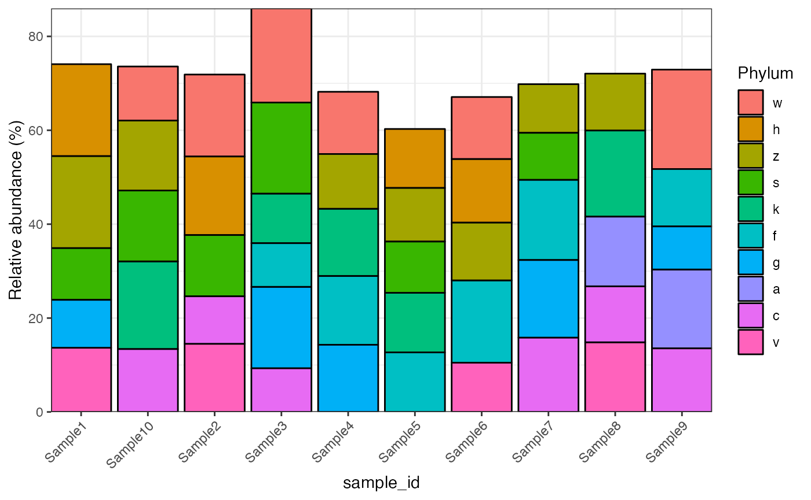
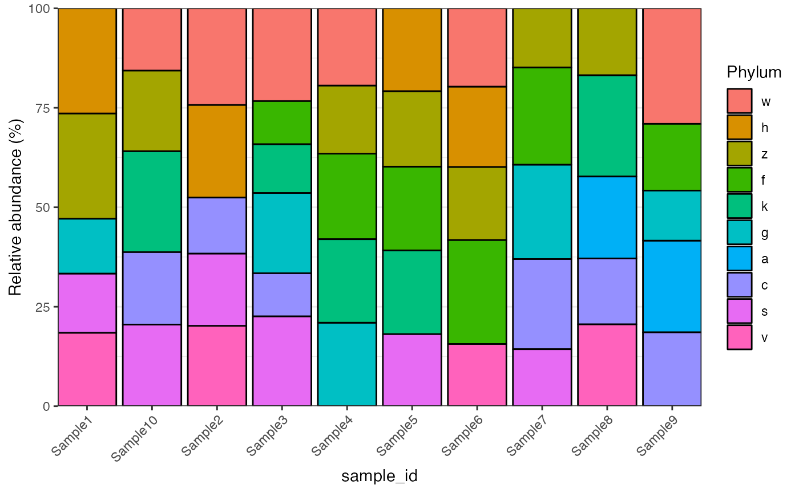

vignettes/import_data.Rmd
import_data.RmdYou can load the demo data in microbiomedataset package
to see the microbiome_dataset class.
data("global_patterns")
global_patterns
#> --------------------
#> microbiomedataset version: 0.99.1
#> --------------------
#> 1.expression_data:[ 19216 x 26 data.frame]
#> 2.sample_info:[ 26 x 8 data.frame]
#> 3.variable_info:[ 19216 x 8 data.frame]
#> 4.sample_info_note:[ 8 x 2 data.frame]
#> 5.variable_info_note:[ 8 x 2 data.frame]
#> --------------------
#> Processing information (extract_process_info())
#> create_microbiome_dataset ----------
#> Package Function.used Time
#> 1 microbiomedataset create_microbiome_dataset() 2022-07-10 10:56:13So you can see that we have 1,9216 variables and 26 samples in the dataset.
You can also create the microbiome_dataset class using
the create_microbiome_dataset function.
We need to prepare at least three data for it.
expression_data: rows are variables and columns are
samples.
sample_info: Information for all the samples in
expression_data. The first column should be
sample_id which should be identical with the column names
of expression_data.
variable_info: Information for all the variables in
expression_data. The first column should be
variable_id which should be identical with the row names of
expression_data.
expression_data <-
as.data.frame(matrix(
sample(1:100, 100, replace = TRUE),
nrow = 10,
ncol = 10
))
rownames(expression_data) <- paste0("OTU", 1:nrow(expression_data))
colnames(expression_data) <-
paste0("Sample", 1:ncol(expression_data))
expression_data
#> Sample1 Sample2 Sample3 Sample4 Sample5 Sample6 Sample7 Sample8 Sample9
#> OTU1 4 95 97 75 78 73 48 52 97
#> OTU2 38 24 45 83 100 97 94 9 56
#> OTU3 67 79 10 32 77 58 41 76 35
#> OTU4 13 28 51 81 100 32 32 94 5
#> OTU5 54 71 94 55 86 54 55 23 26
#> OTU6 96 91 20 14 99 75 38 42 24
#> OTU7 50 31 84 81 62 51 91 17 42
#> OTU8 34 55 45 16 76 19 87 61 62
#> OTU9 96 41 1 66 90 68 57 62 34
#> OTU10 38 29 37 63 20 26 7 76 77
#> Sample10
#> OTU1 61
#> OTU2 30
#> OTU3 51
#> OTU4 99
#> OTU5 80
#> OTU6 19
#> OTU7 11
#> OTU8 71
#> OTU9 79
#> OTU10 29
variable_info <-
as.data.frame(matrix(
sample(letters, 70, replace = TRUE),
nrow = nrow(expression_data),
ncol = 7
))
rownames(variable_info) <- rownames(expression_data)
colnames(variable_info) <-
c("Domain",
"Phylum",
"Class",
"Order",
"Family",
"Genus",
"Species")
variable_info$variable_id <-
rownames(expression_data)
variable_info <-
variable_info %>%
dplyr::select(variable_id, dplyr::everything())
sample_info <-
data.frame(sample_id = colnames(expression_data),
class = "Subject")
object <-
create_microbiome_dataset(
expression_data = expression_data,
sample_info = sample_info,
variable_info = variable_info
)
object
#> --------------------
#> microbiomedataset version: 0.99.1
#> --------------------
#> 1.expression_data:[ 10 x 10 data.frame]
#> 2.sample_info:[ 10 x 2 data.frame]
#> 3.variable_info:[ 10 x 8 data.frame]
#> 4.sample_info_note:[ 2 x 2 data.frame]
#> 5.variable_info_note:[ 8 x 2 data.frame]
#> --------------------
#> Processing information (extract_process_info())
#> create_microbiome_dataset ----------
#> Package Function.used Time
#> 1 microbiomedataset create_microbiome_dataset() 2023-04-19 10:38:22We can also transfer or convert other common class object to
microbiome_dataset class.
Please install phyloseq package at first.
if(!require(BiocManager)){
install.packages("BiocManager")
}
if(!require(phyloseq)){
BiocManager::install("phyloseq")
}
library(phyloseq)
data(GlobalPatterns)
GlobalPatterns
#> phyloseq-class experiment-level object
#> otu_table() OTU Table: [ 19216 taxa and 26 samples ]
#> sample_data() Sample Data: [ 26 samples by 7 sample variables ]
#> tax_table() Taxonomy Table: [ 19216 taxa by 7 taxonomic ranks ]
#> phy_tree() Phylogenetic Tree: [ 19216 tips and 19215 internal nodes ]The first function is convert2microbiome_dataset:
object1 <-
convert2microbiome_dataset(object = GlobalPatterns)
object1
#> --------------------
#> microbiomedataset version: 0.99.1
#> --------------------
#> 1.expression_data:[ 19216 x 26 data.frame]
#> 2.sample_info:[ 26 x 8 data.frame]
#> 3.variable_info:[ 19216 x 8 data.frame]
#> 4.sample_info_note:[ 8 x 2 data.frame]
#> 5.variable_info_note:[ 8 x 2 data.frame]
#> --------------------
#> Processing information (extract_process_info())
#> create_microbiome_dataset ----------
#> Package Function.used Time
#> 1 microbiomedataset create_microbiome_dataset() 2023-04-19 10:38:32The second function is as.microbiome_dataset:
object2 <-
as.microbiome_dataset(object = GlobalPatterns)
object2
#> --------------------
#> microbiomedataset version: 0.99.1
#> --------------------
#> 1.expression_data:[ 19216 x 26 data.frame]
#> 2.sample_info:[ 26 x 8 data.frame]
#> 3.variable_info:[ 19216 x 8 data.frame]
#> 4.sample_info_note:[ 8 x 2 data.frame]
#> 5.variable_info_note:[ 8 x 2 data.frame]
#> --------------------
#> Processing information (extract_process_info())
#> create_microbiome_dataset ----------
#> Package Function.used Time
#> 1 microbiomedataset create_microbiome_dataset() 2023-04-19 10:38:40
microbiomedataset::plot_barplot(object = object,
top_n = 5,
fill = "Phylum")
microbiomedataset::plot_barplot(object = object,
top_n = 5,
fill = "Phylum",
relative = TRUE,
re_calculate_relative = TRUE)
sessionInfo()
#> R version 4.2.1 (2022-06-23)
#> Platform: x86_64-apple-darwin17.0 (64-bit)
#> Running under: macOS Big Sur ... 10.16
#>
#> Matrix products: default
#> BLAS: /Library/Frameworks/R.framework/Versions/4.2/Resources/lib/libRblas.0.dylib
#> LAPACK: /Library/Frameworks/R.framework/Versions/4.2/Resources/lib/libRlapack.dylib
#>
#> locale:
#> [1] en_US.UTF-8/en_US.UTF-8/en_US.UTF-8/C/en_US.UTF-8/en_US.UTF-8
#>
#> attached base packages:
#> [1] stats graphics grDevices utils datasets methods base
#>
#> other attached packages:
#> [1] BiocManager_1.30.18 phyloseq_1.40.0
#> [3] forcats_0.5.2 stringr_1.4.1
#> [5] purrr_1.0.1 readr_2.1.3
#> [7] tidyr_1.2.1 tibble_3.1.8
#> [9] ggplot2_3.4.0 tidyverse_1.3.2
#> [11] dplyr_1.0.10 microbiomedataset_0.99.10
#>
#> loaded via a namespace (and not attached):
#> [1] utf8_1.2.2 tidyselect_1.1.2
#> [3] htmlwidgets_1.5.4 grid_4.2.1
#> [5] BiocParallel_1.30.3 munsell_0.5.0
#> [7] codetools_0.2-18 ragg_1.2.2
#> [9] preprocessCore_1.58.0 withr_2.5.0
#> [11] colorspace_2.0-3 Biobase_2.56.0
#> [13] highr_0.9 knitr_1.40
#> [15] rstudioapi_0.14 stats4_4.2.1
#> [17] mzID_1.34.0 labeling_0.4.2
#> [19] MatrixGenerics_1.8.1 GenomeInfoDbData_1.2.8
#> [21] polyclip_1.10-4 farver_2.1.1
#> [23] rhdf5_2.40.0 rprojroot_2.0.3
#> [25] vctrs_0.5.2 generics_0.1.3
#> [27] xfun_0.33 timechange_0.1.1
#> [29] R6_2.5.1 doParallel_1.0.17
#> [31] GenomeInfoDb_1.32.4 clue_0.3-61
#> [33] graphlayouts_0.8.1 MsCoreUtils_1.8.0
#> [35] bitops_1.0-7 rhdf5filters_1.8.0
#> [37] cachem_1.0.6 gridGraphics_0.5-1
#> [39] DelayedArray_0.22.0 assertthat_0.2.1
#> [41] scales_1.2.1 googlesheets4_1.0.1
#> [43] ggraph_2.0.6 gtable_0.3.1
#> [45] affy_1.74.0 tidygraph_1.2.2
#> [47] rlang_1.0.6 systemfonts_1.0.4
#> [49] mzR_2.30.0 GlobalOptions_0.1.2
#> [51] splines_4.2.1 Rdisop_1.56.0
#> [53] lazyeval_0.2.2 gargle_1.2.1
#> [55] impute_1.70.0 broom_1.0.1
#> [57] modelr_0.1.9 yaml_2.3.5
#> [59] reshape2_1.4.4 backports_1.4.1
#> [61] tools_4.2.1 ggplotify_0.1.0
#> [63] affyio_1.66.0 ellipsis_0.3.2
#> [65] jquerylib_0.1.4 biomformat_1.24.0
#> [67] RColorBrewer_1.1-3 BiocGenerics_0.42.0
#> [69] MSnbase_2.22.0 Rcpp_1.0.9
#> [71] plyr_1.8.7 zlibbioc_1.42.0
#> [73] RCurl_1.98-1.8 pbapply_1.5-0
#> [75] GetoptLong_1.0.5 viridis_0.6.2
#> [77] S4Vectors_0.34.0 zoo_1.8-11
#> [79] haven_2.5.1 SummarizedExperiment_1.26.1
#> [81] ggrepel_0.9.2 cluster_2.1.4
#> [83] fs_1.5.2 magrittr_2.0.3
#> [85] masstools_1.0.8 data.table_1.14.6
#> [87] openxlsx_4.2.5.1 circlize_0.4.15
#> [89] reprex_2.0.2 googledrive_2.0.0
#> [91] pcaMethods_1.88.0 ProtGenerics_1.28.0
#> [93] matrixStats_0.62.0 hms_1.1.2
#> [95] evaluate_0.16 XML_3.99-0.10
#> [97] readxl_1.4.1 IRanges_2.30.1
#> [99] gridExtra_2.3 shape_1.4.6
#> [101] compiler_4.2.1 ncdf4_1.20
#> [103] crayon_1.5.1 htmltools_0.5.3
#> [105] mgcv_1.8-42 tzdb_0.3.0
#> [107] lubridate_1.9.0 DBI_1.1.3
#> [109] tweenr_2.0.2 dbplyr_2.2.1
#> [111] ComplexHeatmap_2.12.1 MASS_7.3-58.1
#> [113] Matrix_1.5-1 ade4_1.7-19
#> [115] permute_0.9-7 cli_3.4.1
#> [117] vsn_3.64.0 parallel_4.2.1
#> [119] igraph_1.3.5 GenomicRanges_1.48.0
#> [121] pkgconfig_2.0.3 pkgdown_2.0.6
#> [123] plotly_4.10.0 xml2_1.3.3
#> [125] MALDIquant_1.22 foreach_1.5.2
#> [127] bslib_0.4.0 multtest_2.52.0
#> [129] XVector_0.36.0 massdataset_1.0.21
#> [131] rvest_1.0.3 yulab.utils_0.0.5
#> [133] digest_0.6.31 vegan_2.6-2
#> [135] Biostrings_2.64.1 cellranger_1.1.0
#> [137] rmarkdown_2.16 tidytree_0.4.1
#> [139] curl_4.3.3 rjson_0.2.21
#> [141] lifecycle_1.0.3 nlme_3.1-159
#> [143] jsonlite_1.8.0 Rhdf5lib_1.18.2
#> [145] desc_1.4.2 viridisLite_0.4.1
#> [147] limma_3.52.3 fansi_1.0.3
#> [149] pillar_1.8.1 ggsci_2.9
#> [151] lattice_0.20-45 fastmap_1.1.0
#> [153] httr_1.4.4 survival_3.4-0
#> [155] glue_1.6.2 remotes_2.4.2
#> [157] zip_2.2.1 png_0.1-8
#> [159] iterators_1.0.14 ggforce_0.3.4
#> [161] stringi_1.7.8 sass_0.4.2
#> [163] textshaping_0.3.6 memoise_2.0.1
#> [165] ape_5.6-2